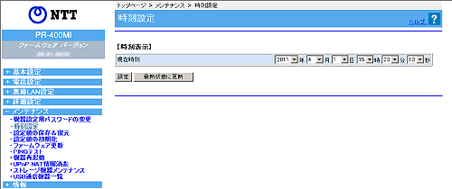

| ご利用のサービスにより画面が表示されない場合があります 現在の年月日、時刻を変更できます。 設定値を選択・入力したあとに［設定］をクリックすると設定内容が保存されます。 |
| ※ 「Web設定」画面に表示されている ボタンについての説明は こちら |
|  |
| 1. | 年月日、時刻を設定する |
|---|---|
 年月日 年月日 |
|
| 新しい年月日を入力します。 | |
| 時刻 |
|
| 新しい時刻を入力します。 | |
| 2. | ［設定］をクリックする。 |
| メンテナンス−時刻設定 | ||||||||||||||||
|
||||||||||||||||
| ［時刻設定］ | ||||||||||||||||
|
||||||||||||||||
| ↑ページのトップへ |